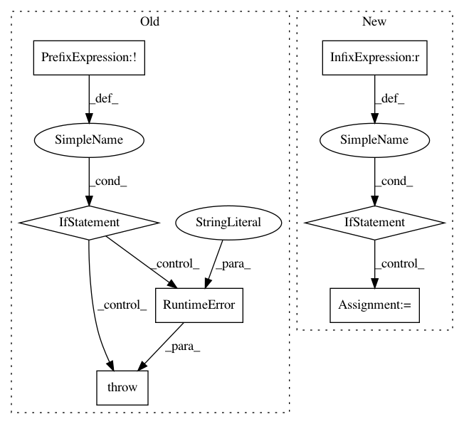

365f621b24631a03f995e3b30e1800d327e42fc1,keras/layers/recurrent.py,Recurrent,reset_states,#Recurrent#Any#,320
Before Change
def reset_states(self, states_value=None):
if not self.stateful:
raise AttributeError("Layer must be stateful.")
if not self.input_spec:
raise RuntimeError("Layer has never been called "
"and thus has no states.")
batch_size = self.input_spec.shape[0]
if not batch_size:
raise ValueError("If a RNN is stateful, it needs to know "
"its batch size. Specify the batch size "
After Change
if self.states[0] is None:
self.states = [K.zeros((batch_size, self.units))
for _ in self.states]
elif states is None:
for state in self.states:
K.set_value(state, np.zeros((batch_size, self.units)))
else:
if not isinstance(states, (list, tuple)):
states = [states]
if len(states) != len(self.states):
In pattern: SUPERPATTERN
Frequency: 3
Non-data size: 7
Instances
Project Name: keras-team/keras
Commit Name: 365f621b24631a03f995e3b30e1800d327e42fc1
Time: 2017-04-24
Author: joshuarchin@gmail.com
File Name: keras/layers/recurrent.py
Class Name: Recurrent
Method Name: reset_states
Project Name: streamlit/streamlit
Commit Name: 88e37703dfdd24274ad9744e07adf53a58a9300e
Time: 2019-06-03
Author: tconkling@gmail.com
File Name: lib/streamlit/ScriptRunner.py
Class Name: ScriptRunner
Method Name: _run
Project Name: allenai/allennlp
Commit Name: be97943a42e55ac68c75794187a1c84be5f8d898
Time: 2020-08-31
Author: mattg@allenai.org
File Name: allennlp/common/from_params.py
Class Name:
Method Name: infer_params